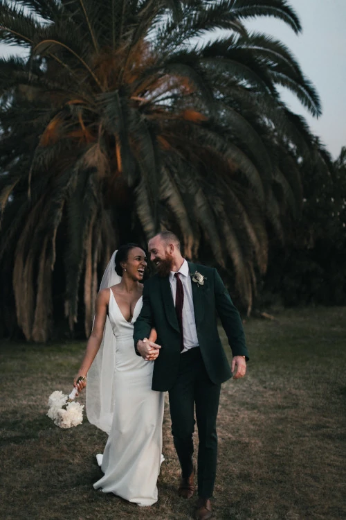
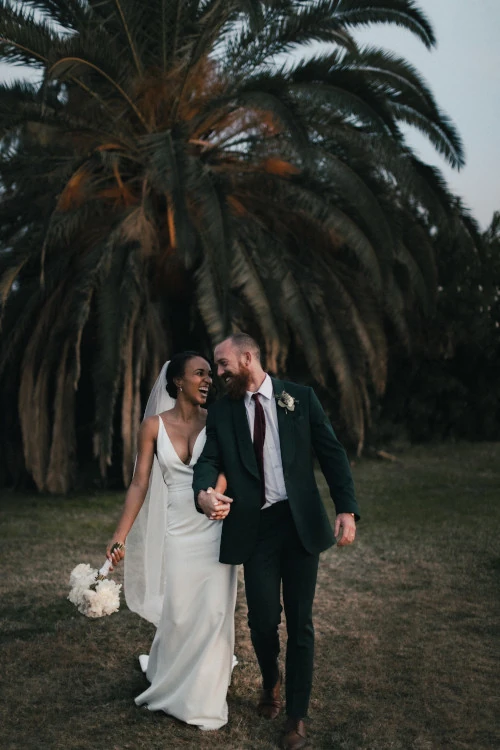

La photographie et moi
Devenir photographe était pour moi une évidence. Comme si j’y étais prédestinée. Saisir un moment, une émotion, une situation, un endroit, une lumière et les rendre immortels, voilà ce qui me fait vibrer.
Nous passons notre vie à chercher le bonheur, et lorsque nous y touchons, nous n’avons qu’une envie : le figer au travers de photographies pour le savourer avec les personnes qui sont importantes à nos yeux, ou le partager au plus grand nombre. C’est ce que je vous propose : saisir ces merveilleux moments au travers de mon regard, mon approche, ma technique. Rendre ces moments immortels, afin que vous puissiez y puiser de l’amour, du bonheur, de la tendresse et de la lumière à chaque fois que vous poserez les yeux sur vos photos.
Mon portfolio

 

Un portrait n’est pas une ressemblance. Dès lors qu’une émotion ou qu’un fait est traduit en photo, il cesse d’être un fait pour devenir une opinion. L’inexactitude n’existe pas en photographie. Toutes les photos sont exactes. Aucune d’elles n’est la vérité.
Mes services
Shooting photo
Anniversaire, naissance, mariage... je me déplace en Île-de-France pour capturer vos moments les plus précieux et les rendre éternels
350€/demi journée
Matériel, déplacement inclusRetouches photo
Des retouches professionnelles, telles que l'application d'un filtre ou la suppression d'un élément, sublimeront vos photos et les rendront encore plus captivantes lorsque vous les partagerez sur les réseaux sociaux
50€/photo
2 AR par photoAlbum photos
Imprimer vos photos est un moyen sûr de les conserver dans le temps. Créez un album personnalisé à offrir ou à partager avec vos proches
400€ album A4
30 pages recto-versoDe manière inconsciente, je crois, je guette un regard, une expression, des traits ou une nostalgie capable de résumer ou plus exactement de révéler une vie
Une question ? Un devis ?
N’hésitez pas à m’écrire ! Je réponds dans les 24h